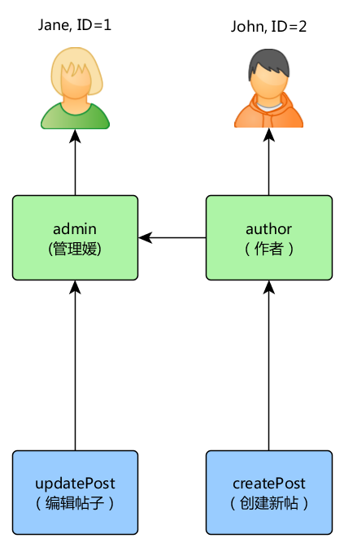
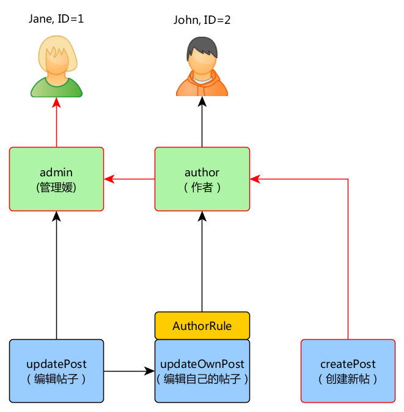
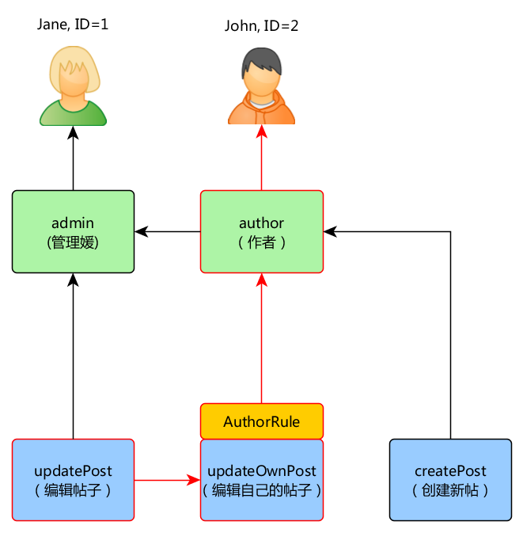
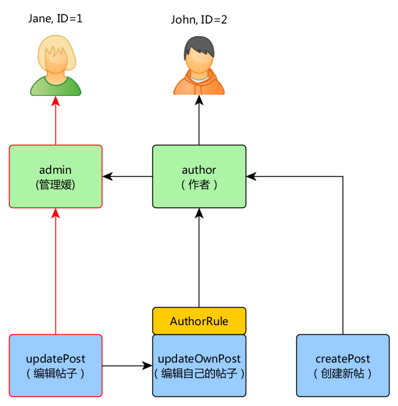

授权 ¶
授权是指验证用户是否允许做某件事的过程。Yii提供两种授权方法： 存取控制过滤器（ACF）和基于角色的存取控制（RBAC）。
存取控制过滤器 ¶
存取控制过滤器（ACF）是一种通过 yii\filters\AccessControl 类来实现的简单授权方法， 非常适用于仅需要简单的存取控制的应用。正如其名称所指，ACF 是一种动作过滤器 filter，可在控制器或者模块中使用。当一个用户请求一个动作时， ACF会检查 access rules 列表，判断该用户是否允许执 行所请求的动作。
下述代码展示如何在 site 控制器中使用 ACF：
use yii\web\Controller;
use yii\filters\AccessControl;
class SiteController extends Controller
{
public function behaviors()
{
return [
'access' => [
'class' => AccessControl::className(),
'only' => ['login', 'logout', 'signup'],
'rules' => [
[
'allow' => true,
'actions' => ['login', 'signup'],
'roles' => ['?'],
],
[
'allow' => true,
'actions' => ['logout'],
'roles' => ['@'],
],
],
],
];
}
// ...
}
上面的代码中 ACF 以行为 (behavior) 的形式附加到 site 控制器。
这就是很典型的使用行动过滤器的方法。 only 选项指明 ACF 应当只
对 login， logout 和 signup 方法起作用。所有其它的 site
控制器中的方法不受存取控制的限制。 rules 选项列出了 存取规则 (access rules)，解读如下：
- 允许所有访客（还未经认证的用户）执行
login和signup动作。roles选项包含的问号?是一个特殊的标识，代表”访客用户”。 - 允许已认证用户执行
logout动作。@是另一个特殊标识， 代表”已认证用户”。
ACF 自顶向下逐一检查存取规则，直到找到一个与当前
欲执行的动作相符的规则。 然后该匹配规则中的 allow
选项的值用于判定该用户是否获得授权。如果没有找到匹配的规则，
意味着该用户没有获得授权。（译者注： only 中没有列出的动作，将无条件获得授权）
当 ACF 判定一个用户没有获得执行当前动作的授权时，它的默认处理是：
- 如果该用户是访客，将调用 yii\web\User::loginRequired() 将用户的浏览器重定向到登录页面。
- 如果该用户是已认证用户，将抛出一个 yii\web\ForbiddenHttpException 异常。
你可以通过配置 yii\filters\AccessControl::$denyCallback 属性定制该行为：
[
'class' => AccessControl::className(),
...
'denyCallback' => function ($rule, $action) {
throw new \Exception('You are not allowed to access this page');
}
]
Access rules 支持很多的选项。下列是所支持选项的总览。 你可以派生 yii\filters\AccessRule 来创建自定义的存取规则类。
allow： 指定该规则是 "允许" 还是 "拒绝" 。（译者注：true是允许，false是拒绝）
actions：指定该规则用于匹配哪些动作。 它的值应该是动作方法的ID数组。匹配比较是大小写敏感的。如果该选项为空，或者不使用该选项， 意味着当前规则适用于所有的动作。
controllers：指定该规则用于匹配哪些控制器。 它的值应为控制器ID数组。匹配比较是大小写敏感的。如果该选项为空，或者不使用该选项， 则意味着当前规则适用于所有的动作。（译者注：这个选项一般是在控制器的自定义父类中使用才有意义）
roles：指定该规则用于匹配哪些用户角色。 系统自带两个特殊的角色，通过 yii\web\User::$isGuest 来判断：
?： 用于匹配访客用户 （未经认证）@： 用于匹配已认证用户
使用其他角色名时，将触发调用 yii\web\User::can()，这时要求 RBAC 的支持 （在下一节中阐述）。 如果该选项为空或者不使用该选项，意味着该规则适用于所有角色。
roleParams：指定将传递给 yii\web\User::can() 的参数。 请参阅下面描述RBAC规则的部分，了解如何使用它。 如果此选项为空或未设置，则不传递任何参数。
ips：指定该规则用于匹配哪些 客户端IP地址 。 IP 地址可在其末尾包含通配符
*以匹配一批前缀相同的IP地址。 例如，192.168.*匹配所有192.168.段的IP地址。 如果该选项为空或者不使用该选项，意味着该规则适用于所有角色。verbs：指定该规则用于匹配哪种请求方法（例如
GET，POST）。 这里的匹配大小写不敏感。matchCallback：指定一个PHP回调函数用于 判定该规则是否满足条件。（译者注：此处的回调函数是匿名函数）
denyCallback: 指定一个PHP回调函数， 当这个规则不满足条件时该函数会被调用。（译者注：此处的回调函数是匿名函数）
以下例子展示了如何使用 matchCallback 选项，
可使你设计任意的访问权限检查逻辑：
use yii\filters\AccessControl;
class SiteController extends Controller
{
public function behaviors()
{
return [
'access' => [
'class' => AccessControl::className(),
'only' => ['special-callback'],
'rules' => [
[
'actions' => ['special-callback'],
'allow' => true,
'matchCallback' => function ($rule, $action) {
return date('d-m') === '31-10';
}
],
],
],
];
}
// 匹配的回调函数被调用了！这个页面只有每年的10月31号能访问（译者注：原文在这里说该方法是回调函数不确切，读者不要和 `matchCallback` 的值即匿名的回调函数混淆理解）。
public function actionSpecialCallback()
{
return $this->render('happy-halloween');
}
}
基于角色的存取控制 （RBAC） ¶
基于角色的存取控制 （RBAC） 提供了一个简单而强大的集中式存取控制机制。 详细的关于 RBAC 和诸多传统的存取控制方案对比的详情，请参阅 Wikipedia。
Yii 实现了通用的分层的 RBAC，遵循的模型是 NIST RBAC model. 它通过 authManager application component 提供 RBAC 功能。
使用 RBAC 涉及到两部分工作。第一部分是建立授权数据， 而第二部分是使用这些授权数据在需要的地方执行检查。
为方便后面的讲述，这里先介绍一些 RBAC 的基本概念。
基本概念 ¶
角色是 权限 的集合 （例如：建贴、改贴）。一个角色 可以指派给一个或者多个用户。要检查某用户是否有一个特定的权限， 系统会检查该包含该权限的角色是否指派给了该用户。
可以用一个规则 rule 与一个角色或者权限关联。一个规则用一段代码代表， 规则的执行是在检查一个用户是否满足这个角色或者权限时进行的。例如，"改帖" 的权限 可以使用一个检查该用户是否是帖子的创建者的规则。权限检查中，如果该用户 不是帖子创建者，那么他（她）将被认为不具有 "改帖"的权限。
角色和权限都可以按层次组织。特定情况下，一个角色可能由其他角色或权限构成， 而权限又由其他的权限构成。Yii 实现了所谓的 局部顺序 的层次结构，包含更多的特定的 树 的层次。 一个角色可以包含一个权限，反之则不行。（译者注：可理解为角色在上方，权限在下方，从上到下如果碰到权限那么再往下不能出现角色）
配置 RBAC ¶
在开始定义授权数据和执行存取检查之前，需要先配置应用组件 authManager 。 Yii 提供了两套授权管理器： yii\rbac\PhpManager 和 yii\rbac\DbManager。前者使用 PHP 脚本存放授权数据， 而后者使用数据库存放授权数据。 如果你的应用不要求大量的动态角色和权限管理， 你可以考虑使用前者。
使用 PhpManager ¶
以下代码展示使用 yii\rbac\PhpManager 时如何在应用配置文件中配置 authManager：
return [
// ...
'components' => [
'authManager' => [
'class' => 'yii\rbac\PhpManager',
],
// ...
],
];
现在可以通过 \Yii::$app->authManager 访问 authManager 。
yii\rbac\PhpManager 默认将 RBAC 数据保存在 @app/rbac 目录下的文件中。
如果权限层次数据在运行时会被修改，需确保WEB服务器进程对该目录和其中的文件有写权限。
使用 DbManager ¶
以下代码展示使用 yii\rbac\DbManager 时如何在应用配置文件中配置 authManager：
return [
// ...
'components' => [
'authManager' => [
'class' => 'yii\rbac\DbManager',
// uncomment if you want to cache RBAC items hierarchy
// 'cache' => 'cache',
],
// ...
],
];
注意： 如果您使用的是 yii2-basic-app 模板，则有一个
config/console.php配置文件，其中authManager需要另外声明在config/web.php。 在 yii2-advanced-app 的情况下，authManager只能在common/config/main.php中声明一次。
DbManager 使用4个数据库表存放它的数据：
- itemTable： 该表存放授权条目（译者注：即角色和权限）。默认表名为 "auth_item" 。
- itemChildTable： 该表存放授权条目的层次关系。默认表名为 "auth_item_child"。
- assignmentTable： 该表存放授权条目对用户的指派情况。默认表名为 "auth_assignment"。
- ruleTable： 该表存放规则。默认表名为 "auth_rule"。
继续之前，你需要在数据库中创建这些表。你可以使用存放在 @yii/rbac/migrations 目录中的数据库迁移文件来做这件事（译者注：根据本人经验，最好是将授权数据初始化命令也写到这个 RBAC 数据库迁移文件中）：
yii migrate --migrationPath=@yii/rbac/migrations
阅读 Separated Migrations 部分中有关处理来自不同名称空间的迁移的更多信息。
现在可以通过 \Yii::$app->authManager 访问 authManager 。
建立授权数据 ¶
所有授权数据相关的任务如下：
- 定义角色和权限；
- 建立角色和权限的关系；
- 定义规则；
- 将规则与角色和权限作关联；
- 指派角色给用户。
根据授权灵活性要求，上述任务可以通过不同的方式完成。 如果您的权限层次结构仅由开发人员更改，则可以使用迁移或控制台命令。 Migration pro 是可以与其他迁移一起执行的。 控制台命令 pro 是您可以很好地了解代码中的层次结构， 而不是分散在多个迁移中。
无论哪种方式，最终都会得到以下 RBAC 层次结构：

如果您需要动态形成权限层次结构，则需要 UI 或控制台命令。 用于构建层次结构的 API 本身不会有所不同。
使用迁移（Using migrations） ¶
您可以使用 migrations
通过 authManager 提供的 API 初始化和修改层次结构。
使用 ./yii migrate/create init_rbac 创建新迁移，然后实现创建层次结构：
<?php
use yii\db\Migration;
class m170124_084304_init_rbac extends Migration
{
public function up()
{
$auth = Yii::$app->authManager;
// 添加 "createPost" 权限
$createPost = $auth->createPermission('createPost');
$createPost->description = 'Create a post';
$auth->add($createPost);
// 添加 "updatePost" 权限
$updatePost = $auth->createPermission('updatePost');
$updatePost->description = 'Update post';
$auth->add($updatePost);
// 添加 "author" 角色并赋予 "createPost" 权限
$author = $auth->createRole('author');
$auth->add($author);
$auth->addChild($author, $createPost);
// 添加 "admin" 角色并赋予 "updatePost"
// 和 "author" 权限
$admin = $auth->createRole('admin');
$auth->add($admin);
$auth->addChild($admin, $updatePost);
$auth->addChild($admin, $author);
// 为用户指派角色。其中 1 和 2 是由 IdentityInterface::getId() 返回的id
// 通常在你的 User 模型中实现这个函数。
$auth->assign($author, 2);
$auth->assign($admin, 1);
}
public function down()
{
$auth = Yii::$app->authManager;
$auth->removeAll();
}
}
如果您不想硬编码哪些用户具有某些角色，请不要在迁移中使用
->assign()调用。 相反，请创建UI或控制台命令来管理分配。
迁移可以通过 yii migrate 使用。
使用控制台命令（Using console command） ¶
如果您的权限层次根本没有改变，并且您拥有固定数量的用户，
则可以创建一个控制台命令，它将通过
authManager 提供的 API 初始化授权数据一次：
<?php
namespace app\commands;
use Yii;
use yii\console\Controller;
class RbacController extends Controller
{
public function actionInit()
{
$auth = Yii::$app->authManager;
$auth->removeAll();
// 添加 "createPost" 权限
$createPost = $auth->createPermission('createPost');
$createPost->description = 'Create a post';
$auth->add($createPost);
// 添加 "updatePost" 权限
$updatePost = $auth->createPermission('updatePost');
$updatePost->description = 'Update post';
$auth->add($updatePost);
// 添加 "author" 角色并赋予 "createPost" 权限
$author = $auth->createRole('author');
$auth->add($author);
$auth->addChild($author, $createPost);
// 添加 "admin" 角色并赋予 "updatePost"
// 和 "author" 权限
$admin = $auth->createRole('admin');
$auth->add($admin);
$auth->addChild($admin, $updatePost);
$auth->addChild($admin, $author);
// 为用户指派角色。其中 1 和 2 是由 IdentityInterface::getId() 返回的id
// 通常在你的 User 模型中实现这个函数。
$auth->assign($author, 2);
$auth->assign($admin, 1);
}
}
注意： 如果您使用高级模板，则需要将
RbacController放在console/controllers目录中， 并将命名空间更改为console/controllers。
上面的命令可以通过以下方式从控制台执行：
yii rbac/init
如果您不想硬编码用户具有某些角色，请不要将
->assign()调用放入命令中。 相反，请创建UI或控制台命令来管理分配。
为用户分配角色（Assigning roles to users） ¶
作者可以创建帖子，管理员可以更新帖子并可以做一切作者都能做的。
如果您的应用程序允许用户注册，则需要为这些新用户分配一次角色。
例如，为了让所有注册用户成为高级项目模板中的作者，您需要修改 frontend\models\SignupForm::signup()，
如下所示：
public function signup()
{
if ($this->validate()) {
$user = new User();
$user->username = $this->username;
$user->email = $this->email;
$user->setPassword($this->password);
$user->generateAuthKey();
$user->save(false);
// 增加了以下三行：
$auth = \Yii::$app->authManager;
$authorRole = $auth->getRole('author');
$auth->assign($authorRole, $user->getId());
return $user;
}
return null;
}
对于需要动态更新授权数据的复杂访问控制的应用程序，可能需要使用
authManager 提供的 API 来开发特殊的用户界面（即管理面板）。
使用规则 (Rules) ¶
如前所述，规则给角色和权限增加额外的约束条件。规则是 yii\rbac\Rule 的派生类。 它需要实现 execute() 方法。在之前我们创建的层次结构中，作者不能编辑自己的帖子，我们来修正这个问题。 首先我们需要一个规则来认证当前用户是帖子的作者：
namespace app\rbac;
use yii\rbac\Rule;
use app\models\Post;
/**
* 检查 authorID 是否和通过参数传进来的 user 参数相符
*/
class AuthorRule extends Rule
{
public $name = 'isAuthor';
/**
* @param string|integer $user 用户 ID.
* @param Item $item 该规则相关的角色或者权限
* @param array $params 传给 ManagerInterface::checkAccess() 的参数
* @return boolean 代表该规则相关的角色或者权限是否被允许
*/
public function execute($user, $item, $params)
{
return isset($params['post']) ? $params['post']->createdBy == $user : false;
}
}
上述规则检查 post 是否是 $user 创建的。我们还要在之前的命令中
创建一个特别的权限 updateOwnPost ：
$auth = Yii::$app->authManager;
// 添加规则
$rule = new \app\rbac\AuthorRule;
$auth->add($rule);
// 添加 "updateOwnPost" 权限并与规则关联
$updateOwnPost = $auth->createPermission('updateOwnPost');
$updateOwnPost->description = 'Update own post';
$updateOwnPost->ruleName = $rule->name;
$auth->add($updateOwnPost);
// "updateOwnPost" 权限将由 "updatePost" 权限使用
$auth->addChild($updateOwnPost, $updatePost);
// 允许 "author" 更新自己的帖子
$auth->addChild($author, $updateOwnPost);
现在我们得到如下层次结构:

存取检查 ¶
授权数据准备好后，存取检查简单到只需要一个方法调用 yii\rbac\ManagerInterface::checkAccess()。 因为大多数存取检查都是针对当前用户而言，为方便起见， Yii 提供了一个快捷方法 yii\web\User::can()，可以如下例所示来使用：
if (\Yii::$app->user->can('createPost')) {
// 建贴
}
如果当前用户是 ID=1 的 Jane ，我们从图中的 createPost 开始，并试图到达 Jane 。 （译者注：参照图中红色路线所示的建贴授权流程）

为了检查某用户是否能更新帖子，我们需要传递一个额外的参数，该参数是 AuthorRule 要用的：
if (\Yii::$app->user->can('updatePost', ['post' => $post])) {
// 更新帖子
}
下图所示为当前用户是 John 时所发生的事情：

我们从图中的 updatePost 开始，经过 updateOwnPost。为通过检查，Authorrule
规则的 execute() 方法应当返回 true 。该方法从 can() 方法调用接收到 $params 参数，
因此它的值是 ['post' => $post] 。如果一切顺利，我们会达到指派给 John 的 author 角色。
对于 Jane 来说则更简单，因为她是管理员：

在您的控制器内部有几种实现授权的方式。 如果您希望细化权限来分开添加和删除的访问权限，那么您需要检查每个操作的访问权限。 您可以在每个操作方法中使用上述条件，或使用 yii\filters\AccessControl：
public function behaviors()
{
return [
'access' => [
'class' => AccessControl::className(),
'rules' => [
[
'allow' => true,
'actions' => ['index'],
'roles' => ['managePost'],
],
[
'allow' => true,
'actions' => ['view'],
'roles' => ['viewPost'],
],
[
'allow' => true,
'actions' => ['create'],
'roles' => ['createPost'],
],
[
'allow' => true,
'actions' => ['update'],
'roles' => ['updatePost'],
],
[
'allow' => true,
'actions' => ['delete'],
'roles' => ['deletePost'],
],
],
],
];
}
如果所有的CRUD操作都是一起管理的，那么使用 managePost 这样的单一权限并且在
yii\web\Controller::beforeAction() 中检查它是个好主意。
在上面的例子中，没有参数与指定的访问动作的角色一起传递，但是在
updatePost 权限的情况下，我们需要传递 post 参数才能正常工作。
您可以通过在访问规则中指定 roleParams 将参数传递给
yii\web\User::can()：
[
'allow' => true,
'actions' => ['update'],
'roles' => ['updatePost'],
'roleParams' => function() {
return ['post' => Post::findOne(['id' => Yii::$app->request->get('id')])];
},
],
在上面的例子中，roleParams 是一个 Closure， 将在检查访问规则时进行评估，因此模型只会在需要时加载。 如果创建角色参数是一个简单的操作，那么您可以指定一个数组，如下所示：
[
'allow' => true,
'actions' => ['update'],
'roles' => ['updatePost'],
'roleParams' => ['postId' => Yii::$app->request->get('id')];
],
使用默认角色 ¶
所谓默认角色就是 隐式 地指派给 所有 用户的角色。不需要调用 yii\rbac\ManagerInterface::assign() 方法做显示指派，并且授权数据中不包含指派信息。
默认角色通常与一个规则关联，用以检查该角色是否符合被检查的用户。
默认角色常常用于已经确立了一些角色的指派关系的应用（译者注：指派关系指的是应用业务逻辑层面，
并非指授权数据的结构）。比如，一个应用的 user 表中有一个 group 字段，代表用户属于哪个特权组。
如果每个特权组可以映射到 RBAC 的角色，你就可以采用默认角色自动地为每个用户指派一个 RBAC 角色。
让我们用一个例子展示如何做到这一点。
假设在 user 表中，你有一个 group 字段，用 1 代表管理员组，用 2 表示作者组。
你规划两个 RBAC 角色 admin 和 author 分别对应这两个组的权限。
你可以这样设置 RBAC 数据，
namespace app\rbac;
use Yii;
use yii\rbac\Rule;
/**
* 检查是否匹配用户的组
*/
class UserGroupRule extends Rule
{
public $name = 'userGroup';
public function execute($user, $item, $params)
{
if (!Yii::$app->user->isGuest) {
$group = Yii::$app->user->identity->group;
if ($item->name === 'admin') {
return $group == 1;
} elseif ($item->name === 'author') {
return $group == 1 || $group == 2;
}
}
return false;
}
}
然后按 in the previous section 中的说明创建自己的 command/migration：
$auth = Yii::$app->authManager;
$rule = new \app\rbac\UserGroupRule;
$auth->add($rule);
$author = $auth->createRole('author');
$author->ruleName = $rule->name;
$auth->add($author);
// ... 添加$author角色的子项部分代码 ... （译者注：省略部分参照之前的控制台命令）
$admin = $auth->createRole('admin');
$admin->ruleName = $rule->name;
$auth->add($admin);
$auth->addChild($admin, $author);
// ... 添加$admin角色的子项部分代码 ... （译者注：省略部分参照之前的控制台命令）
注意，在上述代码中，因为 "author" 作为 "admin" 的子角色，当你实现这个规则的 execute() 方法时，
你也需要遵从这个层次结构。这就是为何当角色名为 "author" 的情况下（译者注：$item->name就是角色名），
execute() 方法在组为 1 或者 2 时均要返回 true
（意思是用户属于 "admin" 或者 "author" 组 ）。
接下来，在配置 authManager 时指定 yii\rbac\BaseManager::$defaultRoles 选项（译者注：在应用配置文件中的组件部分配置）：
return [
// ...
'components' => [
'authManager' => [
'class' => 'yii\rbac\PhpManager',
'defaultRoles' => ['admin', 'author'],
],
// ...
],
];
现在如果你执行一个存取权限检查， 判定该规则时， admin 和 author
两个角色都将会检查。如果规则返回 true ，意思是角色符合当前用户。基于上述规则
的实现，意味着如果某用户的 group 值为 1 ， admin 角色将赋予该用户，
如果 group 值是 2 则将赋予 author 角色。